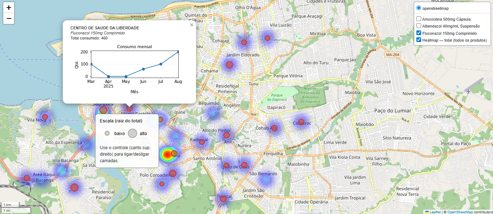
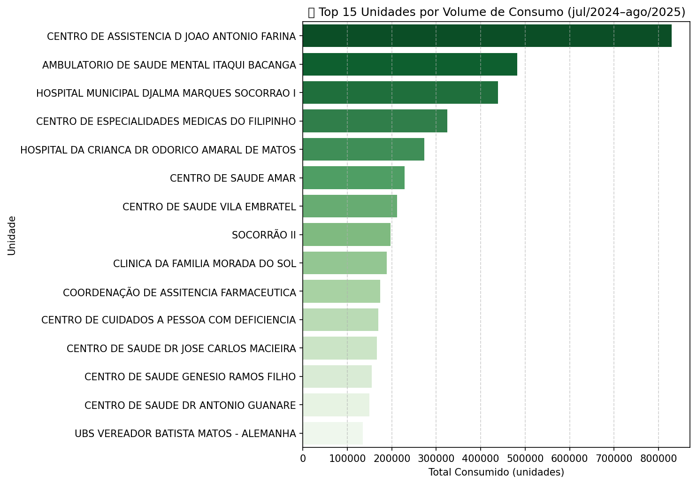
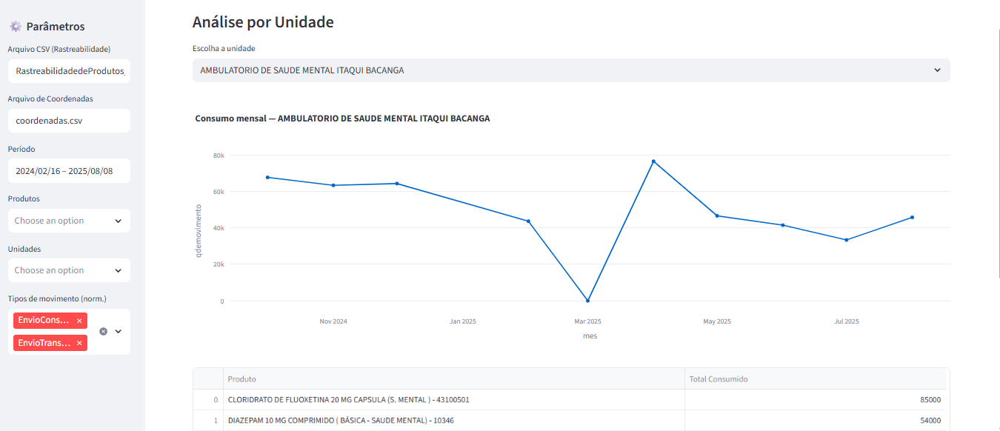
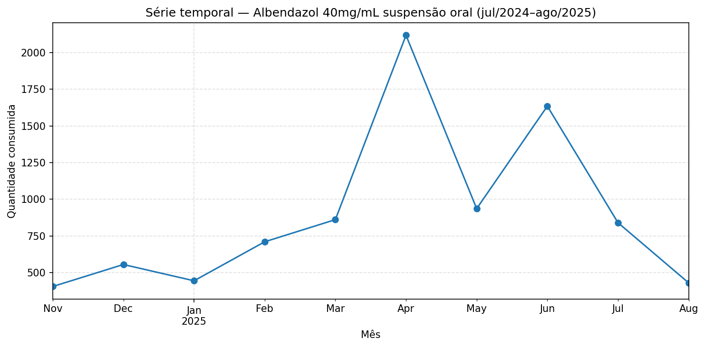

Análise territorial de demanda farmacêutica: base administrativa, Censo IBGE, mapas e painel para a gestão pública
Trabalho de conclusão da especialização em Data Science and Analytics (USP/ESALQ). São Luís opera a plataforma Vivver, que registra a movimentação de medicamentos na rede municipal. O volume de dados existia; faltava transformá-lo em leitura territorial para a gestão — o mesmo encadeamento de um observatório: diagnosticar a fonte, recortar o território e devolver um instrumento de uso institucional.
O problema era compreender padrões temporais e territoriais de consumo e subsidiar abastecimento e monitoramento. A premissa: mesmo com restrições orçamentárias, dá para construir uma solução de baixo custo a partir da base administrativa já existente, cruzada com o Censo 2022 (IBGE).




A cadeia foi fonte administrativa → território → modelo → interface:
O consumo não é homogêneo: concentra-se em polos de referência e coincide com o período chuvoso. O albendazol se alinha visualmente a bairros com pior saneamento no Censo IBGE. Unidades periféricas aparecem com registro baixo ou irregular — hipótese de falha logística ou de subnotificação. O painel devolve isso ao gestor. Resumo executivo publicado na Revista E&S (ISSN 2675-6528), em 23 de fevereiro de 2026.
Publicação: revistaes.com.br/resumo-executivo/analise-da-gestao-de-farmacos-em-sao-luis-com-ciencia-de-dados